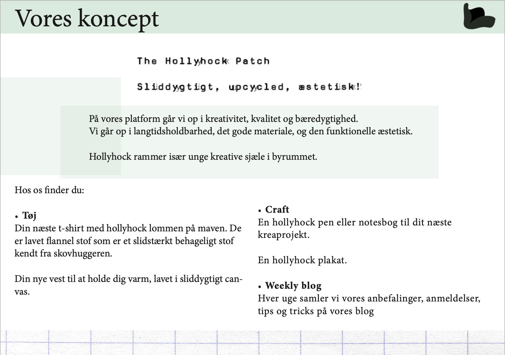
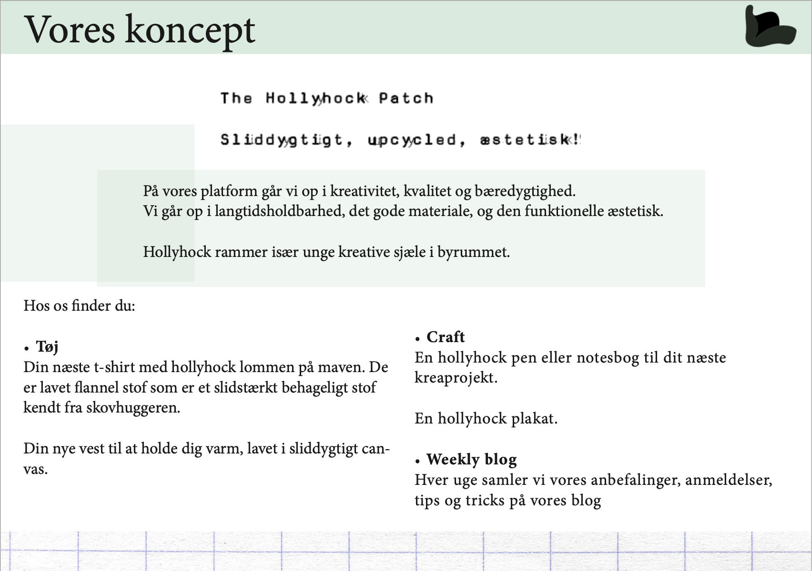

UX Løsning + Pitch
Projektet grundlæggende UX havde til formål at lære os om selve brugeren, og hvordan brugeren spiller
sammen med
brugergrænseoverfladen. Vores ene fokus var at bruge forskellige metoder til at researche, hvad brugeren
ønsker, og hvad
deres mål er, i dette tilfælde når de besøger en webshop. Vores andet fokus var at arbejde med at skabe
et koncept og
derefter at kunne pitche dette koncept.
Se testmetoder
Vi lærte testmetoder som desk research, interview, observation og survey. Jeg valgte at bruge desk
research til at
undersøge, hvad allerede fandtes inden for webshops. Dette er en metode jeg har gjort brug af i alle
mine efterfølgende
projekter for at undersøge tidens tendenser. Tendenser som interaktive og dynamiske webshops går især
igen, og jeg
valgte at bruge en burger menu fremfor en statisk top menu.
Jeg gik ud og observerede min målgruppes valg af påklædning og brugte aeiou metoden for at observere
mest muligt. Jeg
interviewede en bruger fra min målgruppe for at komme med dybdegående spørgsmål. Jeg lavede en survey og
nåede ud til
flere på en gang. På baggrund af de indsigter jeg fik, rettede jeg til i mit koncept. Gennem min survey
fandt jeg for
eksempel ud af at bæredygtighed var vigtigt for min målgruppe, og derfor skulle dette være et fokus i
mit koncept. Det
indgår også i konceptets USP.

Designet af webshoppen kom til live gennem skitser af wireframes, layout og logo. Vi brugte en design
sprint som værktøj
til at få så mange ideer som muligt. Jeg brugte også design sprint som værktøj til layout af portfolio
sitet. Den
endelige webshop blev formidlet gennem en XD prototype.

 
Se pitch

Se pitch